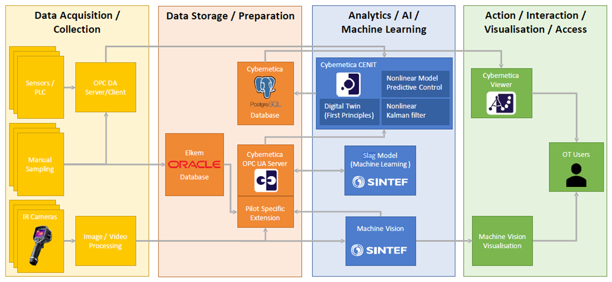

The predictive slag model will be an integral part of a proposed dynamic online model for the post tap hole processing of liquid ferrosilicon, which will utilize measured process data in real-time and continuously update the optimal process route.
The slag model will use data from the furnace, previous tap hole readings, and an IR camera in the tapping area that will detect and quantify the amount of slag that follows the liquid ferrosilicon as it is being drained from the furnace. By employing recurrent neural networks, the model predicts the amount of slag to show up in the next tapping, or next few tappings.
Such a model has several uses: for one, it can be used to analyze the relationship between the condition of the furnace and slag, and thus increasing the understanding of slag generation, either by confirming current assumptions or revealing unknown causes. Secondly, it will provide operators with useful operation and be and important part of a larger model of the system.
In the Elkem pilot, the slag model will be a component of the hybrid digital twin. There, a predictive control scheme will calculate the optimal amount of each addition to maximize the recycling of scrap material while keeping the composition and temperature within the required specification. The results will be presented visually to the operator, who will decide on whether to follow the suggestions given by the optimization or not.
Figure: The slag model is a component in the Digital Twin in the Elkem pilot.
The model is written as a Python script, to be run either in terminal or in the Jupyter notebook web application. It can be amended to handle input data in different formats, e.g. csv or xlsx files. The input parameters should be time series, which may be of varying length and have different frequencies. The user will be alerted of errors, with descriptive explanations and suggestions for how to remedy.
The output of the online model will be the predicted slag in the upcoming tappings, for a time interval set by the user. This will be given either directly on a screen or as data sent to other components of the digital twin. On the screen it can be displayed both as numerical values and plots. If desirable, warnings of predicted high slag content may be given with explanatory text.
The model is implemented in Python 3 and uses the free and open-source libraries Keras and TensorFlow.
Elkem pilot.